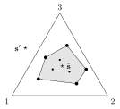

7 Mutualism, competition for resources and metabolic scaling
The random-matrix picture of Chapter 6 treats interactions as given. This chapter asks where they come from and what structure they acquire. Three themes recur. Optimisation: species that adapt their interactions or metabolism to maximise their own growth produce collective structures (nested mutualistic networks, coexistence of many competitors). Resources: modelling them explicitly turns competition into a geometric problem and resolves the paradox that many more species coexist than there are resources. Scaling: metabolism, growth and the organisation of whole forests follow power laws that can be derived from optimal use of space and energy.
7.1 Mutualistic networks and nestedness
7.1.1 Bipartite structure
Pollination, seed dispersal and many symbioses are mutualistic: both partners benefit. A plant–pollinator community with \(P\) pollinators and \(F\) flowers is a bipartite network, with interaction matrix (connectance \(c = L/(PF)\)) \[M = \begin{pmatrix}\Omega_{PP} & \Gamma\\ \Gamma^\top & \Omega_{FF}\end{pmatrix},\] where \(\Gamma\) encodes mutualism between the two guilds and the diagonal blocks encode competition within each guild (pollinators compete for flowers, flowers for pollinators).
Ordering rows and columns by degree, empirical \(\Gamma\) matrices (databases such as web-of-life.es) are strikingly nested: specialists interact with subsets of the partners of generalists, so the occupied entries fill a roughly triangular region in the upper-left corner. Nestedness is quantified, e.g., by the overlaps \(o^P_{ij} = \sum_k\Gamma_{ik}\Gamma_{jk}\) (flowers shared by pollinators \(i\) and \(j\)) and by the NODF index (nestedness based on overlap and decreasing fill), between \(0\) and \(1\).
7.1.2 Is nestedness random?
Comparison with null models answers it:
- Null model 1 (same \(S\) and \(c\), edges placed at random): empirical networks are far more nested than random ones, well beyond three standard deviations.
- Null model 2 (same degree sequences, edges reshuffled; configuration model): most of the nestedness is explained by the degree heterogeneity, but real networks remain systematically more nested, especially the most nested ones.
Degree heterogeneity alone is not enough: some mechanism must organise which partners each species chooses.
7.1.3 Adaptive foraging
Suweis et al. (2013) proposed that species rewire their interactions to increase their own abundance. Start from GLV dynamics with mutualism and competition, \[\dot x_i = x_i\Bigl(\alpha_i - \sum_jM_{ij}x_j\Bigr),\] with \(\gamma_{ij} \sim -|\mathcal N(0, \sigma_\Gamma)|\) in the mutualistic block (negative \(M\) means benefit) and \(\omega_{ij} \sim |\mathcal N(0, \sigma_\Omega)|\) in the competitive blocks, chosen so that the equilibrium \(\mathbf x^* = M^{-1}\boldsymbol\alpha\) is feasible and stable. At each step a species \(k\) tries to move one of its links from partner \(m\) to partner \(n\), keeping its degree. The swap \(M \to M' = M + \delta M\) is accepted if it increases \(k\)’s equilibrium abundance, \(x'^*_k > x^*_k\).
Simulations show that random networks evolve toward highly nested ones, and the total abundance increases, although each species optimises only its own. With competition turned off, the structure is different (symmetric block). Competition breaks the symmetry between the guilds and produces nestedness.
Why does the total increase? To first order in \(\delta M\), \(\delta\mathbf x^* = -M^{-1}\delta M\,\mathbf x^*\). In a mean-field approximation where competition is homogeneous, \(M_0 = \mathbb 1 + \Omega\) with \(\Omega_{ij} = c\omega(1 - \delta_{ij})\), the swap changes only the row and column of \(k\) at the positions of \(m\) and \(n\), with \(\delta M_{km} = -\delta M_{kn}\) (degree conserved). The changes of \(x_m\) and \(x_n\) then cancel, and \[\delta x^*_{\text{tot}} \simeq \delta x^*_k > 0 .\] Selfish optimisation, accepted only when it benefits the swapping species, also benefits the community on average.
Why nestedness? Expanding \(M^{-1} = M_0^{-1} - M_0^{-1}VM_0^{-1} + M_0^{-1}VM_0^{-1}VM_0^{-1} - \dots\) with the mutualistic part \(V\), and using the explicit inverse of the homogeneous competition matrix (Exercise), \[x^*_{\text{tot}} \propto \sum_{ij}(M^{-1})_{ij} \simeq k_0 + c_1\,o, \qquad o = \frac{1}{\gamma^2}\sum_{ij}\sum_k\bigl(\Gamma_{ki}\Gamma_{kj} + \Gamma_{ik}\Gamma_{jk}\bigr),\] the second-order term is proportional to the total overlap \(o\), a measure of nestedness. Maximising total abundance therefore maximises nestedness.
Stability. Optimised networks are less stable than random ones. With weak interactions, perturbation theory gives the eigenvalues of \(J = -\operatorname{diag}(\mathbf x^*)M\) as \(\lambda_i \simeq -x^*_i + O(\text{interactions})\). Stability is controlled by the rarest species, and optimisation, by favouring abundant generalists, pushes some species toward extinction. The eigenvector associated with \(\lambda_{\max}\) becomes localised on a few species: perturbations affect a small part of the community, which mitigates the loss of stability.
7.2 Competition for resources
7.2.1 The competitive exclusion principle
Two bacterial strains grown on the same single resource, with periodic dilution, cannot coexist: the one that grows faster on that resource increases its share at each cycle and eventually excludes the other (Gause, 1934). With two resources, each preferred by one strain, both can persist. The competitive exclusion principle (CEP) generalises this: at most as many species as limiting resources can coexist at equilibrium. Yet plankton communities with a handful of limiting nutrients host hundreds of species (Hutchinson’s paradox of the plankton), and microbial communities show similar richness.
7.2.2 MacArthur’s consumer–resource model
For \(m\) species (\(n_\sigma\)) and \(p\) abiotic resources (\(c_i\)), \[\dot n_\sigma = n_\sigma\Bigl(\sum_{i=1}^pv_i\alpha_{\sigma i}r_i(c_i) - \delta_\sigma\Bigr), \qquad \dot c_i = s_i - \sum_{\sigma=1}^mn_\sigma\alpha_{\sigma i}r_i(c_i),\] with supply rates \(s_i\), conversion efficiencies \(v_i\), death rates \(\delta_\sigma\), Monod uptake \(r_i(c) = c/(c + k_i)\), and metabolic strategies \(\alpha_{\sigma i} \geq 0\): the rate at which species \(\sigma\) takes up resource \(i\). A coexistence equilibrium requires, for every surviving \(\sigma\), \(\sum_iv_i\alpha_{\sigma i}r_i(c^*_i) = \delta_\sigma\): \(m\) linear equations in the \(p\) unknowns \(r_i(c^*_i)\). For generic parameters there is no solution when \(m > p\). This is the CEP in mathematical form.
With biotic resources (logistic growth instead of a constant supply), the QSA eliminates the resources and yields GLV equations among the consumers. Competition coefficients are then overlaps of metabolic strategies, \(M_{\sigma\tau} \propto \sum_i\alpha_{\sigma i}\alpha_{\tau i}\) (Exercise).
7.2.3 Metabolic trade-offs
Posfai, Taillefumier and Wingreen (2017) noted that producing transporters and enzymes costs energy, and each organism has a finite budget. Impose \[\sum_iw_i\alpha_{\sigma i} = E \quad\text{for every species } \sigma,\] with \(w_i\) the cost of using resource \(i\), and let all death rates equal \(\delta\). At a coexistence equilibrium \(\sum_iv_i\alpha_{\sigma i}r^*_i = \delta\) for all \(\sigma\). With the budget, \(r^*_i = \frac{\delta}{E}\frac{w_i}{v_i}\) solves all \(m\) equations at once, so the degeneracy that produced the CEP is lifted. The resource equations then give \(\sum_\sigma n^*_\sigma\alpha_{\sigma i} = \frac E\delta\,\frac{s_iv_i}{w_i}\), and summing the population equations, \(\dot N = \tilde s - \delta N\) with \(N = \sum_\sigma n_\sigma\) and \(\tilde s = \sum_is_iv_i\): the total population is fixed, \(N^* = \tilde s/\delta\). In normalised variables \[x_\sigma = \frac{n_\sigma}{N}, \qquad \tilde\alpha_{\sigma i} = \frac{w_i\alpha_{\sigma i}}{E}, \qquad \hat s_i = \frac{s_iv_i}{\sum_js_jv_j},\] each with unit sum, the equilibrium condition is \[\sum_\sigma x^*_\sigma\tilde{\boldsymbol\alpha}_\sigma = \hat{\mathbf s} .\]
The vectors \(\tilde{\boldsymbol\alpha}_\sigma\) and \(\hat{\mathbf s}\) lie in the \((p - 1)\)-dimensional simplex. All \(m\) species can coexist (with positive \(x^*_\sigma\)) iff the normalised supply \(\hat{\mathbf s}\) lies inside the convex hull of the strategies \(\{\tilde{\boldsymbol\alpha}_\sigma\}\). If \(\hat{\mathbf s}\) is outside, species go extinct until at most \(p\) remain: the CEP is recovered.

Figure: three resources. Dots are normalised metabolic strategies; the shaded region is their convex hull. With supply \(\hat{\mathbf s}\) inside, all species coexist; with \(\hat{\mathbf s}'\) outside, some go extinct.
The trade-off explains the paradox, but it is fine tuned. If budgets differ slightly between species, coexistence of more than \(p\) species is broken again.
7.2.4 Adaptive metabolic strategies
Microbes do change their metabolism: E. coli growing on glucose and lactose first consumes glucose, pauses, and then switches on the lac operon to consume lactose (Monod’s diauxic shift, 1941). Pacciani-Mori et al. (2020) let strategies evolve to increase each species’ growth rate \(g_\sigma = \sum_iv_i\alpha_{\sigma i}r_i(c_i)\), subject to the soft budget constraint \(\sum_i\alpha_{\sigma i} \leq E_\sigma\): \[\dot\alpha_{\sigma i} = \alpha_{\sigma i}\,d\,\Bigl[v_ir_i(c_i) - \frac{\Theta\bigl(\sum_k\alpha_{\sigma k} - E_\sigma\bigr)}{\sum_k\alpha_{\sigma k}}\sum_jv_j\alpha_{\sigma j}r_j(c_j)\Bigr].\] This is gradient ascent of \(g_\sigma\), projected onto the constraint surface when the budget is saturated. The projection removes the component of the gradient along the constraint’s normal. In general, maximising \(Q(\mathbf x)\) under \(\rho(\mathbf x) = 0\) uses \(\dot{\mathbf x} = \nabla Q - \frac{\nabla Q\cdot\nabla\rho}{|\nabla\rho|^2}\nabla\rho\), which keeps \(\rho\) constant and increases \(Q\) by the Cauchy–Schwarz inequality. The factor \(\alpha_{\sigma i}\) keeps strategies non-negative, and \(d\) is the adaptation velocity.
Results:
- With one species and two resources, the model reproduces diauxic shifts quantitatively (E. coli, yeast on galactose and ethanol).
- With many species, strategies evolve until the supply vector lies inside their convex hull: the CEP is violated without fine tuning, even when budgets differ.
- When the supply fluctuates in time, adaptive communities track it and retain more species than fixed-strategy ones: adaptation increases resilience.
- If adaptation is too slow relative to ecological dynamics, extinctions occur before strategies adjust and the CEP is recovered: the adaptation velocity is a crucial parameter.
7.2.5 Proteome allocation
Where does the budget come from? Bacterial proteomes divide into sectors (Scott and Hwa, 2010): a fixed housekeeping sector \(Q\), a ribosomal sector \(R\) that synthesises proteins, and a metabolic sector \(P\) that imports and processes nutrients, with \(\Phi_P + \Phi_R + \Phi_Q = 1\). Empirically, at steady exponential growth with rate \(g\), \[\Phi_R = \Phi_R^{(0)} + \frac{g}{k_t}, \qquad \Phi_P = \frac{g}{k_n},\] the bacterial growth laws. Here \(k_t\) is the translational capacity and \(k_n\) the nutritional capacity of the medium, which grows with resource concentration through a Monod factor. Growing faster needs more ribosomes and more metabolic machinery from a fixed budget. A consumer–resource model with constrained proteome allocation (each species distributing \(\Phi^P_\sigma = \sum_i\Phi_{\sigma i}\) across resources, with \(\Phi^Q_\sigma\) incompressible) gives a mechanistic origin for metabolic trade-offs and adaptive strategies, linking cellular physiology to community coexistence.
7.3 Metabolic scaling and the structure of forests
7.3.1 Kleiber’s law from optimal transport
Across organisms the basal metabolic rate scales as \(B \propto M^{3/4}\) (Kleiber, 1947), not as \(M^{2/3}\), the surface-to-volume law expected if metabolism were limited by heat dissipation through the skin. Banavar, Maritan and Rinaldo (1999) gave a geometric argument. A circulatory network delivers nutrients from a source to \(N \propto B\) sites filling a \(D\)-dimensional region of linear size \(L\), so \(B \propto L^D\). The total amount of fluid in transit (blood) is at least proportional to the sum of the distances from the source to all sites, \(M_{\text{blood}} \propto L^D\cdot L = L^{D+1}\). Minimising it, \(M \propto B^{(D+1)/D}\), i.e. \[B \propto M^{D/(D+1)} = M^{3/4}\quad(D = 3).\] Quarter powers follow from efficient supply in three dimensions. They do not depend on fractal details of the network.
7.3.2 Ontogenetic growth
Allocating incoming energy between maintenance and the creation of new tissue gives (West, Brown, Enquist, 2001) \[\frac{dm}{dt} = a\,m^{3/4}\Bigl[1 - \Bigl(\frac mM\Bigr)^{1/4}\Bigr],\] with \(M\) the adult mass. With \(r = (m/M)^{1/4}\) and \(\tau = at/(4M^{1/4})\), all species collapse onto the universal growth curve \(r(\tau) = 1 - [1 - r(0)]e^{-\tau}\): chickens, cows and fish follow the same dimensionless curve, with a characteristic time \(\propto M^{1/4}\).
7.3.3 Trees and forests
For a tree, metabolism is the water transpired by the leaves, and allometry follows from crown geometry (Simini et al., 2010). If the crown radius scales with height as \(r_{\text{crown}} \sim h^H\) (with \(H = 1\) for isometric crowns near the tropics), the crown volume, and hence leaf area and metabolism, scale as \(B \sim h^{1 + 2H}\), while the water mass scales as \(M \sim h^{2 + 2H}\). Hence \[B \sim M^{\frac{1 + 2H}{2 + 2H}} \leq M^{3/4},\] with Kleiber’s law recovered for \(H = 1\). Since water flux through the trunk \(\propto r^2\), the trunk radius scales as \(r \sim h^{(1 + 2H)/2}\).
At the community level, assume that tree crowns fill the available space as efficiently as possible. If \(N P(h)\,dh\) trees have heights in \([h, h + dh]\), requiring that the crown volume per unit area be the same at every height scale gives the ideal distribution \[P(h) \propto h^{-(1 + 2H)}, \qquad P(r) \propto r^{-7/3}\ \ (H = 1).\] Real forests are limited by total resources, and the ideal power law acquires a finite-size cut-off. Minimising the Kullback–Leibler distance from the ideal distribution under the constraint of fixed total metabolic rate gives \[P(r) \propto r^{-7/3}\exp\bigl[-(r/r_c)^2\bigr],\] which fits trunk-diameter distributions of forests worldwide. Deviations of the measured exponent from the ideal one quantify disturbance: disturbed forests lack large trees and have shallower size distributions. The same finite-size-scaling logic (a power law times a scaling function of \(x/x_c\)) underlies the distribution of distances to the nearest larger tree and simple packing problems.
7.4 Exercises
(From CRM to GLV) Consider consumers \(n_\sigma\) and biotic resources \(\dot c_i = r_ic_i(1 - c_i/k) - \sum_\sigma\alpha_{\sigma i}n_\sigma c_i\), with consumer growth \(\dot n_\sigma = n_\sigma(\sum_iv_i\alpha_{\sigma i}c_i - \delta_\sigma)\). Show that the QSA yields GLV equations among consumers and compute the interaction matrix.
Solution. QSA with \(c_i > 0\): \(c^*_i = k\bigl(1 - \frac1{r_i}\sum_\tau\alpha_{\tau i}n_\tau\bigr)\). Substituting, \[\dot n_\sigma = n_\sigma\Bigl(\underbrace{k\sum_iv_i\alpha_{\sigma i} - \delta_\sigma}_{a_\sigma} - \sum_\tau\underbrace{k\sum_i\frac{v_i\alpha_{\sigma i}\alpha_{\tau i}}{r_i}}_{M_{\sigma\tau}}n_\tau\Bigr).\] Competition coefficients are weighted overlaps of metabolic strategies: species that eat the same things compete. \(M\) is a Gram-like matrix, symmetric if \(v_i\) is uniform and positive semi-definite, so the Lyapunov theorem of Chapter 6 applies and the dynamics converges to a non-invadable equilibrium.
(Mean-field competition inverse) Show that \(M_0 = (1 - c\omega)\mathbb 1 + c\omega\mathbf 1\mathbf 1^\top\) (size \(s\)) has inverse \(A\) with \(A_{ii} = a\), \(A_{ij} = -b\) and \(a = \frac{1 + c\omega(s - 2)}{(1 - c\omega)[1 + c\omega(s - 1)]}\), \(b = \frac{c\omega}{(1 - c\omega)[1 + c\omega(s - 1)]}\).
Solution. By the Sherman–Morrison formula, \((u\mathbb 1 + v\mathbf 1\mathbf 1^\top)^{-1} = \frac1u\mathbb 1 - \frac{v}{u(u + sv)}\mathbf 1\mathbf 1^\top\) with \(u = 1 - c\omega\), \(v = c\omega\). Off-diagonal: \(-\frac{c\omega}{(1 - c\omega)(1 + (s - 1)c\omega)} = -b\). Diagonal: \(\frac{1}{1 - c\omega} - b = \frac{1 + (s - 1)c\omega - c\omega}{(1 - c\omega)(1 + (s - 1)c\omega)} = a\). The row sums \(a - (s - 1)b = \frac{1}{1 + (s - 1)c\omega}\) give the mean-field equilibrium abundance \(x^* = \alpha/(1 + (s - 1)c\omega)\).
(Nestedness) Compute the pairwise overlaps and the total overlap \(o\) for the two \(3\times3\) pollinator–flower matrices \[\Gamma_1 = \begin{pmatrix}1&1&1\\1&1&0\\1&0&0\end{pmatrix}, \qquad \Gamma_2 = \begin{pmatrix}1&1&0\\0&1&1\\1&0&1\end{pmatrix},\] which have the same number of links. Which is more nested?
Solution. Pollinator overlaps \(o^P_{ij} = \sum_k\Gamma_{ik}\Gamma_{jk}\) for \(i \neq j\). \(\Gamma_1\): \(o_{12} = 2\), \(o_{13} = 1\), \(o_{23} = 1\), sum \(4\); by symmetry the flower overlaps also sum to \(4\). \(\Gamma_2\): each pair of pollinators shares exactly one flower, so the sum is \(3\), and likewise \(3\) for flowers. \(\Gamma_1\) (triangular) has the larger overlap: specialists interact with subsets of the generalists’ partners. \(\Gamma_2\) (circulant) has the same degrees, but its overlaps are spread evenly, and it is not nested.
(Convex hull) Two resources (\(p = 2\)) and three species with normalised strategies \(\tilde{\boldsymbol\alpha}_1 = (0.8, 0.2)\), \(\tilde{\boldsymbol\alpha}_2 = (0.5, 0.5)\), \(\tilde{\boldsymbol\alpha}_3 = (0.3, 0.7)\). For which supplies \(\hat{\mathbf s} = (\hat s, 1 - \hat s)\) can all three coexist? Is the equilibrium unique?
Solution. On the simplex (a segment) the convex hull of the strategies is \(\hat s \in [0.3, 0.8]\). Inside it a solution with \(x_\sigma \geq 0\) exists, but \(\sum_\sigma x_\sigma\tilde\alpha_{\sigma1} = \hat s\) and \(\sum_\sigma x_\sigma = 1\) are only two equations for three unknowns, so there is a one-parameter family of equilibria: neutral coexistence along a line. With \(\hat s\) strictly between the extremes, all three can coexist with positive abundances (e.g. for \(\hat s = 0.5\), \(x = (t, 1 - 2t, t)\) for \(0 < t < 1/2\), since \(0.8t + 0.5(1 - 2t) + 0.3t = 0.5\)). For \(\hat s < 0.3\) or \(\hat s > 0.8\) the supply is outside the hull and only species at the boundary of the hull can survive.
(Quarter powers in \(D\) dimensions) Using the optimal-network argument, find the metabolic exponent in \(D = 2\) and explain why the heat-dissipation argument gives \(2/3\) instead.
Solution. \(M \propto B^{(D+1)/D}\) gives \(B \propto M^{D/(D + 1)}\): \(2/3\) in \(D = 2\), \(3/4\) in \(D = 3\). Heat dissipation through a surface gives \(B \propto L^2 \propto M^{2/3}\) for a body of volume \(L^3\). The network argument instead counts the transported material, which grows faster than the volume served (\(L^{D+1}\) versus \(L^D\)) and makes metabolism sublinear with the exponent \(D/(D + 1)\).
(Universal growth curve) Solve \(\dot m = am^{3/4}[1 - (m/M)^{1/4}]\) with \(r = (m/M)^{1/4}\), and show that the time to reach \(90\%\) of the adult mass scales as \(M^{1/4}\).
Solution. \(\dot r = \frac14(m/M)^{-3/4}\frac{\dot m}{M} = \frac{a}{4M^{1/4}}(1 - r)\), so \(1 - r = (1 - r_0)e^{-at/(4M^{1/4})}\). Reaching \(m = 0.9M\) means \(r = 0.9^{1/4} = 0.974\), so \(t_{90} = \frac{4M^{1/4}}{a}\ln\frac{1 - r_0}{0.026}\), proportional to \(M^{1/4}\) for a fixed initial ratio. A mouse (\(30\) g) and a cow (\(300\) kg) differ by \(10^4\) in mass and by \(10\) in growth time.
(Tree allometry) With \(r_{\text{crown}} \sim h^H\), derive the exponents of \(B(h)\), \(M(h)\) and \(B(M)\), and evaluate them for \(H = 1\) and \(H = 1/2\).
Solution. Crown volume \(\sim h\,r_{\text{crown}}^2 = h^{1 + 2H}\), so \(B \sim h^{1 + 2H}\). Water mass: the conducting xylem connects every leaf to the ground, so \(M \sim (\text{leaf area}) \times h\); with leaf density constant, leaf area \(\propto\) crown volume \(\sim h^{1 + 2H}\), hence \(M \sim h^{2 + 2H}\). Then \(B \sim M^{(1 + 2H)/(2 + 2H)}\). \(H = 1\): \(B \sim h^3\), \(M \sim h^4\), \(B \sim M^{3/4}\) (Kleiber). \(H = 1/2\) (narrow crowns, high latitudes): \(B \sim h^2\), \(M \sim h^3\), \(B \sim M^{2/3}\). The exponent never exceeds \(3/4\) for \(H \leq 1\).
7.5 Sources
Prof. S. Suweis, PMLS Course Notes, Sections 4.8–4.11; Lecture 8 slides (mutualistic networks, nestedness, null models, adaptive foraging) and Lecture 9 slides (competitive exclusion, consumer–resource models, metabolic trade-offs, adaptive strategies, diauxic shift, proteome allocation); A. Maritan’s lecture on scaling in ecology, metabolic theory and community patterns (Lecture 22). S. Suweis, F. Simini, J. R. Banavar, A. Maritan, Nature 500, 449 (2013). A. Posfai, T. Taillefumier, N. S. Wingreen, PRL 118, 028103 (2017). L. Pacciani-Mori, A. Giometto, S. Suweis, A. Maritan, PLoS Comput. Biol. 16, e1007896 (2020). M. Scott et al., Science 330, 1099 (2010). J. R. Banavar, A. Maritan, A. Rinaldo, Nature 399, 130 (1999). G. B. West, J. H. Brown, B. J. Enquist, Nature 413, 628 (2001). F. Simini, T. Anfodillo, M. Carrer, J. R. Banavar, A. Maritan, PNAS 107, 7658 (2010).